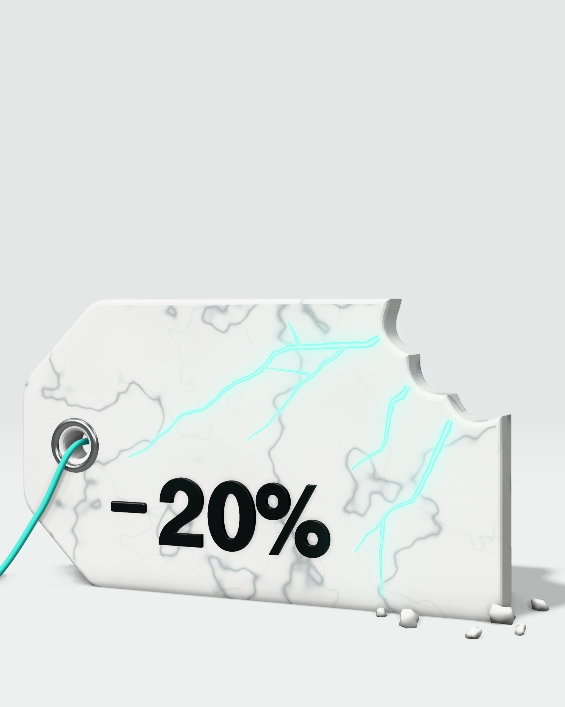
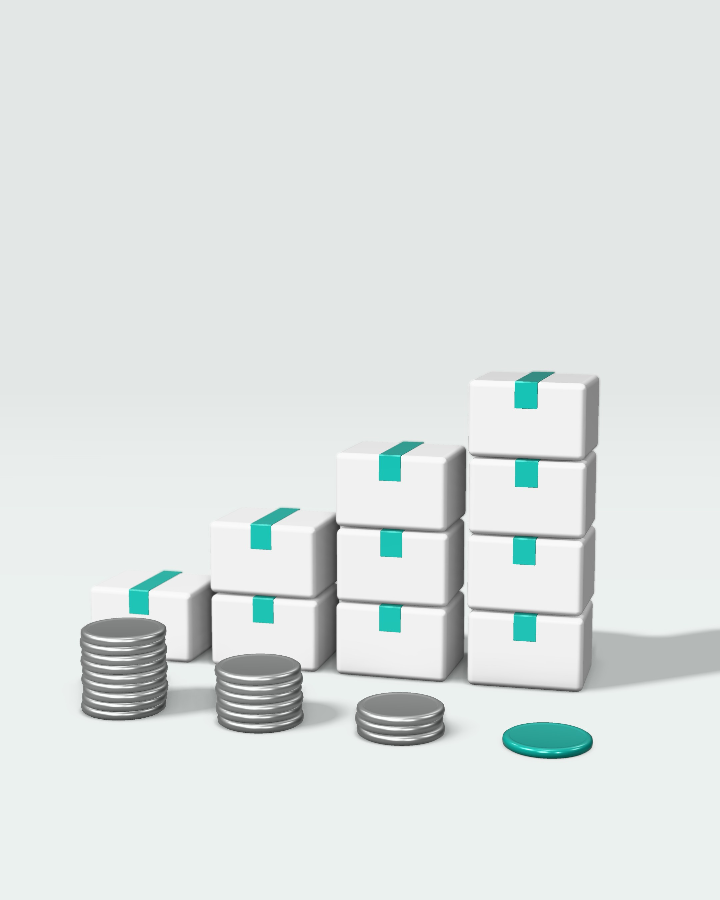
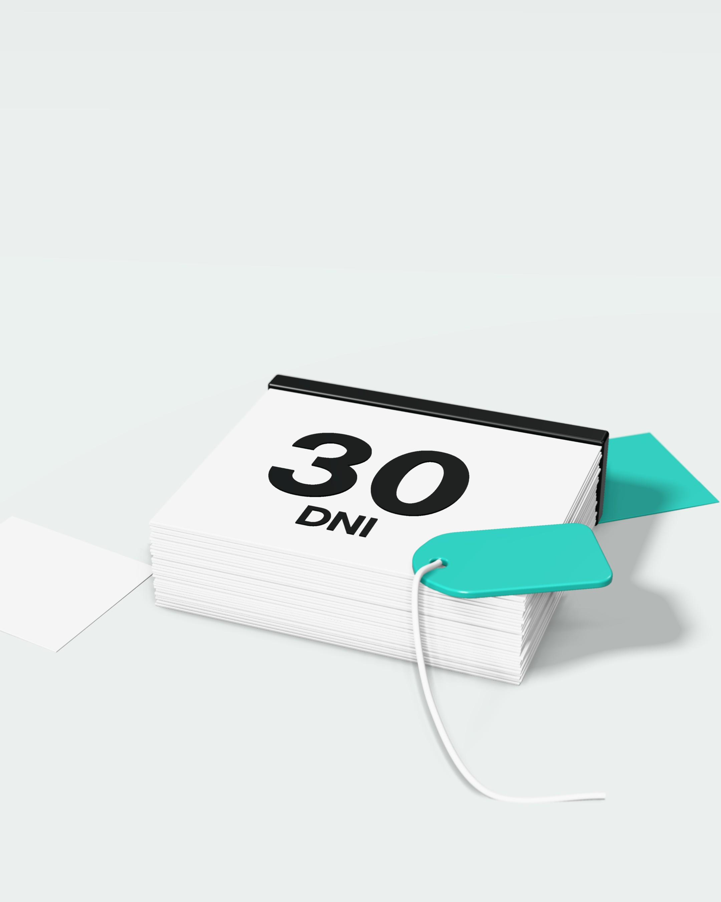
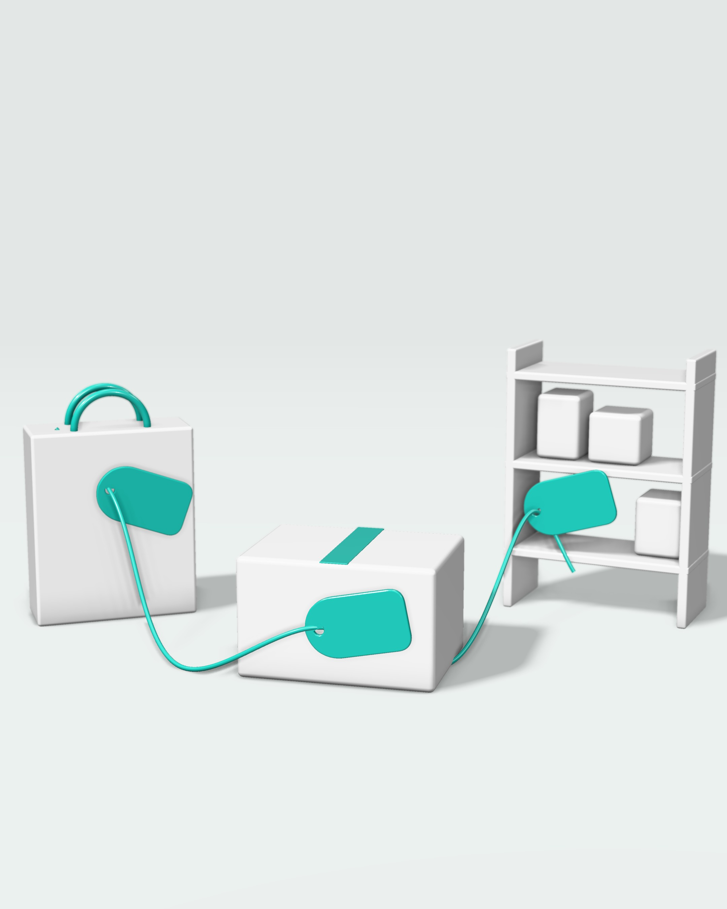
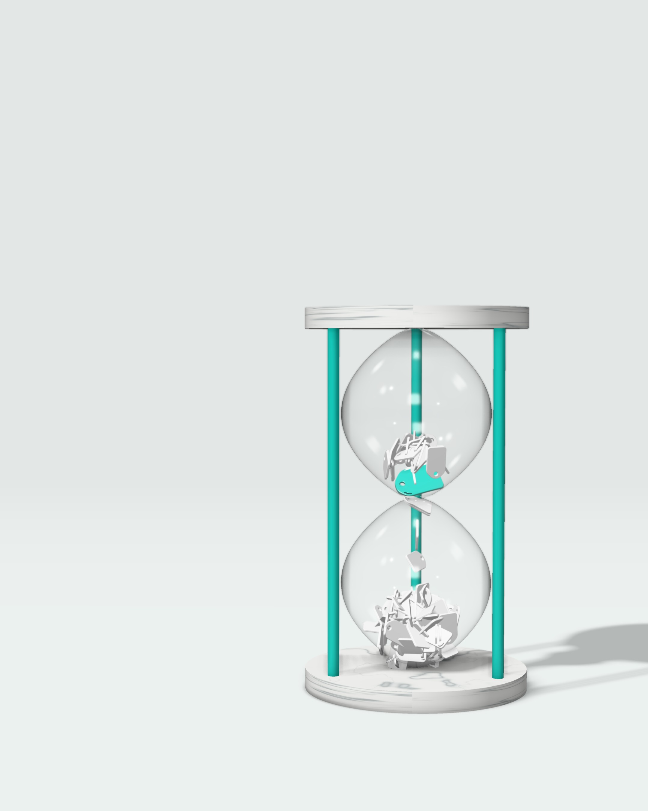
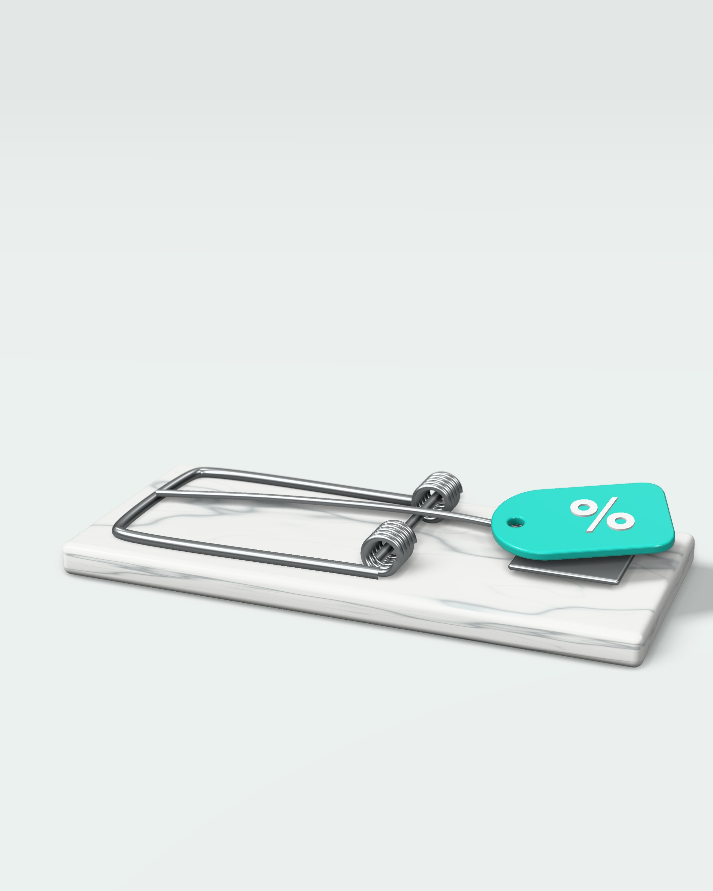
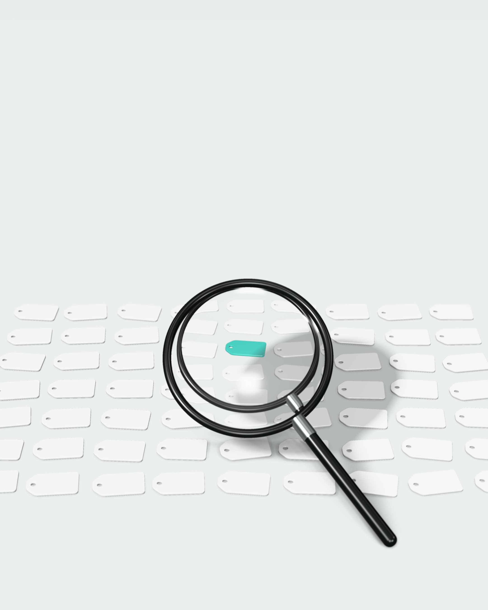

Rabat zjada
zysk.
Black Friday w sklepie, na marketplace i w salonie bez utraty marży. Kalkulator rabatu, Omnibus w każdym kanale i plan na 6 tygodni.
Dla kogo i jak czytać
Ten e-book jest dla Ciebie, jeśli
- prowadzisz sklep internetowy i sprzedajesz też w innych kanałach: na Allegro lub innym marketplace, w salonie, w aplikacji,
- planujesz promocje na Black Friday (27.11.2026) i Cyber Monday (30.11.2026),
- po zeszłorocznym listopadzie sprzedaż wyglądała na rekordową, a na koncie zostało mniej niż zwykle.
Nie jest dla Ciebie, jeśli
sprzedajesz żywność, która szybko się psuje. Dla obniżek na takie produkty przepisy działają inaczej (art. 4 ust. 4 ustawy o informowaniu o cenach) i ten e-book tego nie omawia.
Jak czytać – 20 minut
- 5 minut – rozdziały 01–02. Policzysz, ile naprawdę kosztuje Cię rabat na każdym produkcie.
- 10 minut – rozdziały 03–05. Pokażesz obniżki zgodnie z prawem w każdym kanale i wybierzesz promocje, które nie zjadają marży.
- 5 minut – rozdziały 06–08. Plan na 6 tygodni, 9 błędów i test Twojego sklepu w 10 punktach.
- Na koniec – ściąga ze str. . Wydrukuj ją dla zespołu.
Każdy rozdział kończy się ramką „Do zrobienia dziś” – od 1 do 3 działań na ten sam dzień.
Stan wiedzy: 25.09.2026
Przepisy sprawdziliśmy w tekście ustawy i w wyjaśnieniach Prezesa UOKiK – źródła z datami są na str. .
Ten e-book nie jest poradą prawną. Jeśli masz wątpliwości co do konkretnej promocji, skonsultuj ją z prawnikiem.
Spis treści
- 01Sprzedaż rośnie, zysk spadaDlaczego rabat 20% może zabrać połowę zysku
- 02Kalkulator rabatuIle musisz sprzedać więcej i jaki rabat udźwigniesz
- 03Omnibus w każdym kanaleNajniższa cena z 30 dni: sklep, marketplace, salon, reklamy
- 04Jedna oferta, wiele kanałówArkusz promocji, ceny, stany i obsługa w każdym kanale
- 05Zamiast rabatuDostawa, prezent, zestaw i bon zamiast obniżki
- 06Plan na 6 tygodniOd cen w październiku do zwrotów w grudniu
- 079 błędów Black FridayCo zjada zysk i co zrobić zamiast tego
- 08BadanieTest 10 punktów i nasze badanie cen w 100 sklepach
- +Ściąga · 3 kolejne kroki · Słowniczek i źródła

Sprzedaż rośnie,
zysk spada.
Rabat nie jest darmowym narzędziem marketingu. Płacisz go w całości z marży.
Rabat płacisz z marży
Zysk z zamówienia, nie obrót
3 pułapki Black Friday
Rabat płacisz z marży
Klient widzi −20%. Ty tracisz więcej, bo rabat nie zmniejsza kosztów. Zmniejsza tylko tę część ceny, która jest Twoim zyskiem.
Cena netto, czyli bez VAT, ma dwie części. Pierwsza pokrywa koszty: towar, dostawę, płatność i opakowanie. Druga to Twój zysk. Rabat zabiera pieniądze tylko z drugiej części.
Przykład ze str. : fotel za 1230 zł brutto. Po odjęciu VAT i kosztów zostaje 400 zł zysku, czyli 40% ceny netto. Rabat 20% to 200 zł – połowa tego zysku.
Podziel rabat przez marżę. Wynik to część zysku, którą oddajesz klientowi.
oddajesz klientowizostaje Tobie przy marży 40%
Przed Black Friday nie pytaj „ile sprzedamy?”. Zapytaj „ile zarobimy na każdym zamówieniu?”.
Zysk z zamówienia, nie obrót
Rozpisz jedno zamówienie od ceny do tego, co zostaje w firmie. Przykład: fotel sprzedawany we własnym sklepie.
| Na 1 zamówienie | Cena regularna | Black Friday −20% |
|---|---|---|
| Cena brutto | 1230 zł | 984 zł |
| Cena netto (bez 23% VAT) | 1000 zł | 800 zł |
| Towar | −480 zł | −480 zł |
| Dostawa do klienta | −70 zł | −70 zł |
| Płatność, opakowanie, obsługa | −50 zł | −50 zł |
| Zysk ze sztuki | 400 zł | 200 zł (−50%) |
| Reklama na 1 zamówienie | −100 zł | −100 zł |
| Zysk po reklamie | 300 zł | 100 zł (−67%) |
| Zamówień, żeby zarobić tyle samo | 1 | 3 |
Koszt reklamy na zamówienie może w Black Friday wzrosnąć (więcej firm licytuje te same miejsca) albo spaść (rabat podnosi konwersję). Sprawdź go na danych z zeszłego listopada na swoim koncie.
Przykładowe założenia, nie benchmark. Opłatę za płatność liczymy w uproszczeniu jako stałą kwotę – naprawdę spada razem z ceną o kilka złotych.
3 pułapki Black Friday
Nawet gdy sprzedaż rośnie wystarczająco, część wzrostu nie jest nowym zyskiem.
- Klient, który i tak by kupił. Rabat dostaje każdy, także ten, kto zapłaciłby pełną cenę. Część listopadowych zamówień to zakupy przesunięte z października i grudnia. Porównuj cały kwartał, nie jeden tydzień.
- Klient z rabatu wraca rzadziej. W badaniu na danych gazety i internetowego sklepu spożywczego z USA im głębszy był rabat na start, tym rzadziej klienci wracali. Klienci pozyskani z rabatem 35% byli w długim okresie warci ok. połowę tego, co klienci pozyskani bez promocji.
- Koszty rosną razem z ruchem. Klient, który kupił przez internet, może w ciągu 14 dni od otrzymania towaru odstąpić od umowy bez podania przyczyny. Każdy zwrot kosztuje tyle samo co zwykle, a zysk z zamówienia z rabatem jest mniejszy – w naszym przykładzie o połowę. Do tego dochodzą nadgodziny w magazynie i w obsłudze klienta.
Źródła: M. Lewis, „Journal of Marketing Research” 43(2), 2006; ustawa o prawach konsumenta, art. 27 i 28.
- Wybierz 5 produktów, które najlepiej sprzedają się w listopadzie. Dla każdego zapisz cenę netto, koszt towaru, dostawę i koszt obsługi zamówienia.
- Policz zysk ze sztuki i marżę: zysk podzielony przez cenę netto.
- Sprawdź, ilu nowych klientów przyniósł zeszłoroczny Black Friday i ilu z nich kupiło drugi raz w ciągu roku.
Kalkulator
rabatu.
Zanim ogłosisz −20%, policz, ile musisz sprzedać więcej.
Ile musisz sprzedać więcej · Tabela progu
Kalkulator na kartce · Jaki rabat udźwigniesz
Ile musisz sprzedać więcej
Jeden wzór. Wystarczą dwie liczby w procentach: marża i rabat.
wzrost sprzedaży = rabat ÷ (marża − rabat)
Marża to zysk ze sztuki podzielony przez cenę netto. Zysk liczysz po kosztach zmiennych: towar, dostawa, płatność, opakowanie, prowizje. Jeśli sprzedajesz z reklam, odejmij też koszt reklamy na zamówienie – wynik będzie bliższy prawdy.
Przykład 1 · bez kosztu reklamy
Marża 40%, rabat 20%.
20 ÷ (40 − 20) = 1, czyli +100%. Musisz sprzedać dwa razy więcej sztuk, żeby zarobić tyle samo.
Przykład 2 · z reklamą
Zysk po reklamie: 300 zł z 1000 zł ceny netto, czyli marża 30%.
20 ÷ (30 − 20) = 2, czyli +200%. Trzy razy więcej zamówień – te same 3 fotele co na str. .
Uwaga – 2 błędy w liczeniu marży
- Marża od ceny brutto. VAT nie jest Twoim przychodem. Fotel kupiony za 480 zł netto i sprzedany za 1230 zł brutto: od ceny brutto wychodzi 61%, ale marża na samym towarze to 52% – liczona od 1000 zł netto. Po dostawie i obsłudze zostaje 40%.
- Narzut zamiast marży. Narzut liczysz od kosztu, marżę od ceny. Towar kupiony za 500 zł i sprzedany za 1000 zł netto to narzut 100%, ale marża 50%.
Jeśli część kosztów to procent ceny (prowizja marketplace, opłata za płatność), rabat kosztuje Cię nieco mniej: rabat × (1 − ten procent). Przy prowizji 10% rabat 20% kosztuje 18% ceny.
Tabela progu
Znajdź swoją marżę (wiersz) i planowany rabat (kolumna). Liczba w komórce to wzrost sprzedaży, którego potrzebujesz, żeby zysk się nie zmienił.
| Marża | −5% | −10% | −15% | −20% | −25% | −30% |
|---|---|---|---|---|---|---|
| 20% | +33% | +100% | +300% | zero | strata | strata |
| 25% | +25% | +67% | +150% | +400% | zero | strata |
| 30% | +20% | +50% | +100% | +200% | +500% | zero |
| 35% | +17% | +40% | +75% | +133% | +250% | +600% |
| 40% | +14% | +33% | +60% | +100% | +167% | +300% |
| 50% | +11% | +25% | +43% | +67% | +100% | +150% |
| 60% | +9% | +20% | +33% | +50% | +71% | +100% |
+100% – dwa razy więcej sztuk. zero – rabat równy marży: sprzedajesz bez zysku. strata – każda sprzedana sztuka przynosi stratę.
Przy marży 30% i rabacie 20% potrzebujesz +200%, czyli trzy razy więcej zamówień. Zeszłoroczny Black Friday dał Ci +80%? Przy tej marży to za mało nawet na rabat 15%, który wymaga +100%.
Kalkulator na kartce
Policz jeden produkt w 3 minuty. Potem 10 produktów, które chcesz dać na Black Friday.
| Wzór | Twoje liczby | Przykład | |
|---|---|---|---|
| A | Cena netto = cena brutto ÷ 1,23 | zł | 1000 zł |
| B | Koszt towaru (netto) | zł | 480 zł |
| C | Dostawa, płatność, opakowanie, obsługa | zł | 120 zł |
| D | Prowizja marketplace od ceny regularnej | zł | 0 zł |
| E | Reklama na 1 zamówienie | zł | 100 zł |
| F | Zysk z zamówienia = A − B − C − D − E | zł | 300 zł |
| G | Marża = F ÷ A | % | 30% |
| H | Planowany rabat | % | 20% |
| I | Potrzebny wzrost sprzedaży = H ÷ (G − H) | % | +200% |
| J | Realny wzrost: zeszły rok, ruch, stany magazynu | % | +80% |
Jak czytać wynik
Dla stawek VAT 8% i 5% dziel cenę brutto przez 1,08 lub 1,05. Koszt reklamy na zamówienie: wydatki na reklamę podzielone przez liczbę zamówień z reklam w zeszłym listopadzie.
Jaki rabat udźwigniesz
Odwróć pytanie: zacznij od wzrostu, który realnie osiągniesz.
maksymalny rabat = marża × wzrost ÷ (1 + wzrost)
| Marża | wzrost +10% | wzrost +25% | wzrost +50% | wzrost +100% |
|---|---|---|---|---|
| 20% | 1% | 4% | 6% | 10% |
| 30% | 2% | 6% | 10% | 15% |
| 40% | 3% | 8% | 13% | 20% |
| 50% | 4% | 10% | 16% | 25% |
| 60% | 5% | 12% | 20% | 30% |
W komórce: największy rabat, przy którym zarobisz tyle samo co bez niego (zaokrąglony w dół). Przykład: marża 30% i wzrost +50% – najwyżej 10%.
Uwaga: zeszłoroczny wzrost był efektem konkretnego rabatu. Mniejszy rabat może dać mniejszy wzrost – sprawdź to na części produktów, zanim zmienisz całą ofertę.
Kiedy rabat opłaca się mimo tabeli
- Wypełnij kalkulator ze str. dla 10 produktów na Black Friday.
- Skreśl produkty, w których marża (G) jest mniejsza niż planowany rabat (H).
- Dla pozostałych ustaw rabat z tabeli powyżej zamiast „−20% na wszystko”.

Omnibus w każdym
kanale.
Obniżkę liczysz od najniższej ceny z 30 dni przed nią. W sklepie, na marketplace, w salonie i w reklamie.
Zasada 30 dni · Co jest obniżką, a co nie
Kalendarz Black Friday 2026 · Jak pokazać
cenę
Sklep, marketplace, salon · Kary i kontrole
Zasada 30 dni
Od 1 stycznia 2023 r. każda informacja o obniżce musi mieć obok najniższą cenę z 30 dni przed obniżką. Tak stanowi art. 4 ust. 2 ustawy o informowaniu o cenach towarów i usług. Ten obowiązek wprowadziła unijna dyrektywa Omnibus.
Co to znaczy w praktyce
- Punkt odniesienia. Procent obniżki i kwotę oszczędności liczysz od najniższej ceny z 30 dni przed obniżką, nie od ceny regularnej.
- 30 dni kalendarzowych do dnia przed startem promocji – także wtedy, gdy produktu przez kilka dni nie było w magazynie.
- Każda promocja zostawia ślad. Cena z promocji jest punktem odniesienia dla obniżek przez kolejne 30 dni, nawet jeśli nikt wtedy nie kupił.
- Promocje kroczące nie mają wyjątku. Gdy zwiększasz rabat, na przykład z −20% do −30%, każdą kolejną obniżkę liczysz od najniższej ceny z 30 dni przed nią.
- Nowy produkt, w ofercie krócej niż 30 dni: podajesz najniższą cenę od początku sprzedaży i podpisujesz ją „najniższa cena od wprowadzenia towaru”.
- Reklama też. Te same zasady dotyczą reklamy produktu z ceną (art. 4 ust. 5).
Klienci tego chcą
Blisko 70% badanych przez UOKiK uważa, że przy promocji podanej w procentach na etykiecie powinna być najniższa cena z 30 dni przed obniżką.
UOKiK, badanie „Wpływ promocji na zachowania zakupowe” (komunikat z 12.01.2026).
Co jest obniżką, a co nie
Obowiązek powstaje, gdy informujesz o obniżce konkretnego produktu albo grupy produktów. UOKiK rozumie „informowanie” szeroko.
Trzeba podać najniższą cenę z 30 dni
- słowa „promocja”, „wyprzedaż”, „okazja”, „rabat”, „Black Friday” przy produktach,
- „−20%”, przekreślona cena, zestawienie ceny wyższej z niższą,
- kolor etykiety, którym zwykle oznaczasz promocje,
- kod rabatowy na konkretne produkty lub ich grupę – także podany przez influencera,
- rabat dla klubu albo subskrybentów newslettera na konkretne produkty,
- „kup 2, trzeci 50% taniej”.
Nie trzeba
- niższa cena bez żadnej informacji o obniżce (jedna cena na etykiecie),
- kod na dowolny produkt w koszyku albo na następne zakupy (np. −10 zł),
- rabat urodzinowy, cashback i punkty w programie lojalnościowym,
- „3 w cenie 2” i „kup 2, trzeci gratis”,
- „kup za 100 zł, a dostaniesz 10 zł na kolejne zakupy”.
Kod „na wszystko” ogłoszony na stronie głównej to obniżka całej oferty – przy każdym produkcie musi być najniższa cena z 30 dni. Częste kody „na dowolne zamówienie”, które działają jak promocja na wszystko, UOKiK może uznać za obejście przepisów.
Kalendarz Black Friday 2026
Black Friday wypada 27.11.2026. Dla obniżki, która startuje tego dnia, najniższą cenę bierzesz z okresu 28.10–26.11. Każda promocja w tym czasie obniża Twój punkt odniesienia.
Przykład: produkt za 200 zł. Od 20.11 tydzień promocji, a w piątek większy rabat.
| Termin | Cena | Najniższa cena z 30 dni przed obniżką | Obniżka, którą pokazujesz |
|---|---|---|---|
| do 19.11 | 200 zł | – | – |
| 20–26.11 (Black Week) | 160 zł | 200 zł (21.10–19.11) | −20% |
| od 27.11 (Black Friday) | 140 zł | 160 zł (28.10–26.11) | −12,5%, nie −30% |
- Promocje na te same produkty w Halloween (31.10) i w „Black Week” zmniejszają procent, który pokażesz w piątek. Chcesz komunikować duży rabat w Black Friday? Nie obniżaj cen tych produktów od 28.10.
- Cenę regularną 200 zł i „−30%” możesz pokazać tylko dodatkowo: obok najniższej ceny z 30 dni i obniżki −12,5%, w równorzędny sposób (ta sama wielkość i kolor czcionki).
- Promocja, która trwa bez zmian od startu do Cyber Monday (30.11), ma cały czas ten sam punkt odniesienia.
- Cena z Black Friday przez 30 dni po końcu promocji jest punktem odniesienia dla kolejnych obniżek. Jeśli promocja trwa do 30.11, dotyczy to każdej obniżki, która zacznie się do 30.12 – także na Mikołajki i poświąteczne wyprzedaże. Zaplanuj grudzień, zanim ustalisz ceny na listopad.
Jak pokazać cenę
Najniższa cena z 30 dni stoi tuż przy cenie promocyjnej, jest podpisana słowami i dobrze widoczna.
7 zasad z wyjaśnień Prezesa UOKiK
- Podpis słowami: „najniższa cena z 30 dni przed obniżką”. Niedopuszczalne: „cena referencyjna”, „cena omnibus”, „było”, „najniższa cena z ostatnich 30 dni”, sam symbol albo gwiazdka.
- Tuż obok ceny promocyjnej: w tej samej linii, nad nią albo pod nią. Nie w stopce i nie po przewinięciu strony.
- Najwyżej 2–3 ceny: promocyjna, najniższa z 30 dni i ewentualnie regularna.
- Cena regularna tylko dodatkowo – tą samą czcionką co najniższa z 30 dni. Procent od ceny regularnej pokazujesz wyłącznie obok procentu od najniższej ceny.
- Skrót „najniższa cena” tylko tam, gdzie brakuje miejsca (lista produktów, aplikacja). Pełny opis na karcie produktu albo w dymku.
- Warianty: jeśli rabat zależy od rozmiaru lub koloru, podajesz najniższą cenę wariantu z pokazanym rabatem. Ten wariant musi być dostępny.
- Wszędzie tak samo: lista produktów, karta, koszyk, aplikacja i reklama. Ta sama kolejność cen w całym sklepie.
Sklep, marketplace, salon
Każdy kanał ma własną historię cen. Obniżkę w danym kanale liczysz od najniższej ceny z 30 dni w tym kanale – i musi to jasno wynikać z komunikatu.
Jeśli ceny w tych kanałach się różnią, każdy ma własną historię cen. Promocja w aplikacji nie jest punktem odniesienia dla salonu, nawet gdy klient odbiera w nim zamówienie z aplikacji.
Promocja w jednym salonie nie jest punktem odniesienia dla drugiego. W gazetce dla całej sieci podajesz najniższą cenę z całej sieci i wyraźnie o tym piszesz.
Platforma, która daje narzędzie do obniżek (przekreślenie, „−x%”), też odpowiada za poprawną najniższą cenę. Jeśli sam wpisujesz obniżkę w tytuł albo opis oferty, odpowiadasz sam.
Program lojalnościowy nie jest osobnym kanałem. Cena „z kartą klubu” staje się na 30 dni punktem odniesienia dla wszystkich klientów w tym kanale. Tak samo ceny po kodzie „na wszystko”.
Baner, reklama produktowa w Meta czy Google, mailing, SMS: jeśli pokazujesz produkt z obniżką, podajesz też najniższą cenę z 30 dni. Nie wystarczy, że jest na karcie produktu.
Nie sugeruj, że promocja jest wszędzie, jeśli działa tylko w jednym kanale. UOKiK może to uznać za praktykę wprowadzającą w błąd.
Kary i kontrole
Brak najniższej ceny z 30 dni może się skończyć karą Inspekcji Handlowej. Jeśli dotyczy wielu klientów albo wprowadza ich w błąd – także karą UOKiK.
Blisko 37 mln zł kar dla Zalando i Temu
UOKiK ukarał Zalando (30 945 000 zł) i Temu (5 910 900 zł), decyzje są nieprawomocne. Zalando m.in. podnosiło najniższą cenę z dnia na dzień i liczyło procent od ceny „regularnej”. W styczniu 2026 r. trwało 6 kolejnych postępowań (m.in. Media Markt, Sephora, Jeronimo Martins Polska).
5 błędów z decyzji i wyjaśnień UOKiK
- Procent liczony od ceny regularnej.
- Brak najniższej ceny na liście, w koszyku albo w reklamie.
- Najniższa cena pod gwiazdką, w stopce albo tylko w dymku.
- Najniższa cena zmienia się w trakcie tej samej promocji.
- Podpis „cena referencyjna” zamiast pełnego zwrotu.
- Zapisz promocje od 28.10 do 30.12 w arkuszu (str. ).
- Sprawdź 3 produkty w promocji w każdym kanale: lista, karta, koszyk, reklama.
- Sprawdź, skąd system bierze najniższą cenę i czy uwzględnia kody oraz ceny klubowe.

Jedna oferta,
wiele kanałów.
Klient widzi jedną markę. Zespół potrzebuje jednego arkusza.
Arkusz promocji
Marketplace
Salon i zespół
Arkusz promocji
Jedno źródło prawdy dla całego zespołu: co, gdzie, za ile i do kiedy. Bez niego każdy kanał żyje własnym życiem, a najniższa cena z 30 dni rozjeżdża się między sklepem, marketplace i salonem.
| Jeden wiersz = jeden produkt w jednym kanale | Przykład |
|---|---|
| Produkt (SKU) | FOT-01 |
| Kanał | sklep / Allegro / salon |
| Cena regularna | 1230 zł |
| Najniższa cena z 30 dni przed startem | 1230 zł |
| Cena promocyjna | 984 zł |
| Obniżka od najniższej ceny | −20% |
| Zysk ze sztuki po rabacie (str. ) | 200 zł |
| Start i koniec | 27.11, 0:00 – 30.11, 23:59 |
| Limit sztuk | 40 |
| Kto zatwierdził | imię i nazwisko |
3 zasady
- Jedna osoba zatwierdza ceny od 28.10 do 30.12. Każda niższa cena w tym czasie staje się punktem odniesienia dla kolejnych promocji.
- Najniższą cenę bierzesz z historii cen danego kanału, nie z pamięci. Wpisujesz ją w arkusz na dzień startu promocji.
- Data końca promocji jest w arkuszu i w komunikacji. Promocja przedłużana bez końca może wprowadzać w błąd, nawet z poprawną najniższą ceną (wyjaśnienia UOKiK).
Marketplace
Na marketplace liczą się dwie rzeczy: historia cen Twojej oferty i zasady platformy.
Procent i przekreśloną cenę pokazuje względem najniższej ceny w Twojej ofercie z 30 dni przed obniżką – osobno dla każdej wersji serwisu, np. allegro.pl i allegro.cz.
W Black Weeks 2025 Allegro wymagało obniżki co najmniej 5% względem najniższej ceny z 30 dni i nie pobierało za oferty w akcji dodatkowej prowizji. Warunki na 2026 r. sprawdź w Pomocy Allegro.
W 2025 r. Black Weeks trwały od 31.10 do 1.12. Cena z akcji staje się punktem odniesienia dla kolejnych obniżek w tej ofercie. Chcesz dać większy rabat w piątek? Pamiętaj o przykładzie ze str. .
Jeśli prowizja to procent ceny, rabat kosztuje Cię trochę mniej (str. ). Dostawa, pakowanie i opłaty za wyróżnienie zostają bez zmian.
Ten sam towar sprzedajesz w kilku kanałach naraz. Ustaw automatyczną synchronizację stanów i bufor, np. ostatnie 2–3 sztuki tylko w jednym kanale. Anulowane zamówienia to złe opinie klientów, a na Allegro od poziomu jakości sprzedaży zależy m.in. udział w Allegro Days (w 2024 r. wymagany był co najmniej poziom neutralny).
Zdecyduj z góry: ta sama cena wszędzie czy różne. Jeśli różne – komunikuj obniżkę tylko tam, gdzie obowiązuje (str. ).
Salon i zespół
Klient stoi w salonie i sprawdza ceny w telefonie. Zespół musi znać odpowiedź, zanim padnie pytanie.
Najniższa cena z 30 dni tuż przy cenie promocyjnej, jak w sklepie internetowym. Kolor etykiety, którym oznaczasz promocje, tylko przy obniżkach.
Napisz to przy promocji. Nie sugeruj, że obowiązuje wszędzie.
Kupujący online ma 14 dni od otrzymania towaru na odstąpienie od umowy – także przy odbiorze w salonie. Przy zakupie przy kasie zwrot to Twoja dobrowolna decyzja.
3 pytania, na które zespół zna odpowiedź
„Obniżkę liczymy od najniższej ceny z 30 dni przed obniżką. Tak wymagają przepisy – widzi Pan/Pani prawdziwą oszczędność.”
Ustal zasadę z góry, np. zwrot różnicy bonem przy zakupie do 7 dni wcześniej. Prawo tego nie wymaga, ale spójna odpowiedź buduje zaufanie.
Odpowiedź z arkusza promocji. Jedna dla wszystkich.
- Załóż arkusz promocji (str. ) i wpisz produkty z Black Friday.
- Sprawdź synchronizację stanów i ustaw bufor dla bestsellerów.
- Zapisz 3 odpowiedzi dla salonu, czatu i telefonu. Przećwicz je z zespołem przed 20.11.
Zamiast
rabatu.
Klient chce korzyści. Nie zawsze musi to być niższa cena.
Darmowa dostawa od progu
Prezent i zestaw
Bon, dostęp, zwrot
Darmowa dostawa od progu
Dla klientów koszt dostawy znaczy prawie tyle co cena produktu.
Co skłoniłoby Cię do częstszych zakupów w internecie?
Gemius, „E-commerce w Polsce 2025”, kupujący w internecie, N=1262. Przy wyborze sklepu na pierwszy zakup niskie koszty dostawy wskazuje 38% kupujących, a atrakcyjną cenę 42%.
Jak ustawić próg
- Sprawdź średnią wartość koszyka z ostatnich 3 miesięcy.
- Ustaw próg darmowej dostawy nieco powyżej niej – tak, żeby klient dołożył jeden tańszy produkt.
- Pokaż w koszyku, ile brakuje: „Brakuje 23 zł do darmowej dostawy”.
- Po 2 tygodniach porównaj średni koszyk i zysk z zamówienia.
Wysyłka jednej paczki kosztuje Cię tyle, ile płacisz przewoźnikowi. Rabat 20% przy koszyku 250 zł to 50 zł mniej na każdym zamówieniu.
Prezent i zestaw
Prezent kosztuje Cię cenę zakupu. Rabat kosztuje cenę sprzedaży.
Fotel ze str. : rabat czy prezent? Poduszka dekoracyjna kosztuje w sklepie 123 zł, a Ciebie 40 zł (towar i pakowanie). Jedzie w tej samej paczce.
| Na 1 zamówienie fotela | Cena regularna | Rabat −20% | Prezent: poduszka |
|---|---|---|---|
| Co dostaje klient | – | 246 zł taniej | poduszkę wartą 123 zł |
| Koszt dla sklepu (netto) | – | 200 zł | 40 zł |
| Zysk ze sztuki | 400 zł | 200 zł | 360 zł |
| Potrzebny wzrost sprzedaży | – | +100% | +11% |
„3 w cenie 2” – ta sama poduszka. Twoje koszty to 40 zł na sztukę i 15 zł wysyłki na zamówienie.
| Zamówienie | Klient płaci | Przychód netto | Zysk z zamówienia |
|---|---|---|---|
| 1 szt. w cenie regularnej | 123 zł | 100 zł | 45 zł |
| 1 szt. z rabatem −20% | 98,40 zł | 80 zł | 25 zł |
| 3 szt. w cenie 2 | 246 zł | 200 zł | 65 zł |
| 3 szt. w cenie regularnej | 369 zł | 300 zł | 165 zł |
- „3 w cenie 2” to rabat 33% – tylko w innym opakowaniu. Opłaca się, gdy klient kupiłby jedną sztukę: zarabiasz 65 zł zamiast 45 zł. Tracisz, gdy i tak kupiłby trzy: 65 zł zamiast 165 zł.
- Prezent i „3 w cenie 2” nie są obniżką ceny konkretnego produktu, więc nie musisz przy nich podawać najniższej ceny z 30 dni. „Kup 2, trzeci 50% taniej” już jest obniżką (str. ).
Przykładowe założenia, nie benchmark.
Bon, dostęp, zwrot
Trzy zachęty, które budują drugi zakup, zamiast oddawać marżę dziś.
- Bon na kolejne zakupy. Na przykład „50 zł na zakupy od 300 zł w styczniu”. Płacisz za niego tylko wtedy, gdy klient wróci – i to w spokojniejszym miesiącu. Bon na dowolne produkty nie wymaga podawania najniższej ceny z 30 dni.
- Wcześniejszy dostęp dla subskrybentów. Zbieraj zapisy od października: 20–25% zapytań, które kończą się zakupem, pojawia się już w październiku i na początku listopada (dane Shopera w raporcie Gemius 2025). Jeśli subskrybenci dostaną niższą cenę wcześniej, ta cena stanie się punktem odniesienia dla wszystkich klientów w tym kanale (str. ). Bezpieczniej dać im wcześniej coś innego: limitowaną pulę produktów, prezent albo darmową dostawę. Do wysyłki newslettera potrzebujesz zgody na komunikację marketingową.
- Dłuższy zwrot. Na przykład „zwrot prezentów do 15 stycznia”. Dłuższy termin na zwrot bez podania przyczyny to zachęta do częstszych zakupów dla 17% kupujących w internecie (Gemius 2025). Zasady zapisz w regulaminie.
- Dla 3 produktów policz wariant z prezentem zamiast rabatu. Prezent licz po cenie zakupu.
- Sprawdź średnią wartość koszyka i ustaw próg darmowej dostawy.
- Uruchom zapisy na wcześniejszy dostęp – jeszcze w tym tygodniu.

Plan na 6
tygodni.
Black Friday wygrywasz w październiku.
Tydzień po tygodniu
Budżet reklam od marży
Po Black Friday
Tydzień po tygodniu
6 tygodni przygotowań i tydzień Black Friday. Czytasz później? Zrób zaległe punkty w pierwszym tygodniu.
| Tydzień | Termin | Co robisz |
|---|---|---|
| 1 | 12–18.10 | Liczby: kalkulator dla produktów z Black Friday (str. ). Decyzja: rabat czy inna zachęta (rozdział 05) |
| 2 | 19–25.10 | Ceny na 27.11 zatwierdzone w arkuszu promocji (str. ). Start zapisów na wcześniejszy dostęp |
| 3 | 26.10–1.11 | Od 28.10 bez obniżek na produkty z Black Friday. Reklamy zasięgowe i listy remarketingowe |
| 4 | 2–8.11 | Stany, bufor i synchronizacja kanałów. Reklamy i mailingi z najniższą ceną z 30 dni |
| 5 | 9–15.11 | Test 10 punktów w każdym kanale (str. ). Odpowiedzi dla zespołu, zasady zwrotów |
| 6 | 16–22.11 | Zapowiedzi promocji. Ostatnia decyzja o „Black Week” (str. ) |
| BF | 23–30.11 | Black Friday 27.11, Cyber Monday 30.11. Codziennie: zysk z zamówienia, stany, zwroty |
Zapowiedź z ceną?
Najniższą cenę z 30 dni liczysz na dzień startu promocji, nawet jeśli reklama wychodzi wcześniej. Od publikacji zapowiedzi nie obniżaj ceny tego produktu – dane z reklamy muszą się zgadzać w dniu startu.
Sprzedajesz na Allegro?
Black Weeks mogą ruszyć już na przełomie października i listopada (w 2025 r. 31.10). To osobny kalendarz dla tego kanału (str. ).
Budżet reklam od marży
Rabat podnosi próg, od którego reklama zarabia. Policz go, zanim podniesiesz budżety.
| Na 1 zamówienie fotela | Cena regularna | Black Friday −20% |
|---|---|---|
| Cena brutto = wartość konwersji | 1230 zł | 984 zł |
| Zysk ze sztuki przed reklamą | 400 zł | 200 zł |
| Maksymalny koszt reklamy na zamówienie | 400 zł | 200 zł |
| Próg ROAS = cena brutto ÷ zysk | 3,08 | 4,92 |
| Zysk po reklamie przy ROAS 4 | +93 zł | −46 zł |
- Przy tym samym ROAS kampania może zarabiać w zwykłym tygodniu i tracić w Black Friday. W przykładzie: ROAS 4 daje 93 zł zysku na zamówieniu w cenie regularnej i 46 zł straty z rabatem 20%.
- Ustaw próg ROAS dla okresu promocji osobno i sprawdzaj go codziennie w tygodniu Black Friday.
- Najdroższe tygodnie przeznacz na osoby, które znają Twój sklep: listy remarketingowe, subskrybentów i klientów. Tak radzi też Artur Halik z Shopera w raporcie Gemius 2025.
- Listy remarketingowe buduj od października. Do reklam opartych na zachowaniu w sklepie potrzebujesz zgody z banera cookies.
Wzór zakłada, że wartość konwersji w panelu reklamowym to cena brutto zamówienia. Jeśli przekazujesz wartość netto, dziel cenę netto przez zysk.
Po Black Friday
Listopad kończy się w styczniu: zwroty, grudzień i drugi zakup.
Pieniądze oddajesz w ciągu 14 dni od oświadczenia, ale możesz poczekać na towar. Zaplanuj na ten czas magazyn i obsługę.
Cena z Black Friday jest punktem odniesienia dla obniżek, które zaczną się do 30.12 (str. ). W grudniu sprzedawaj dostawą przed świętami, prezentem i zestawem, nie kolejnym procentem.
Porównaj cały IV kwartał z zeszłym rokiem: zysk z zamówień po reklamie, zwroty, nowych klientów. Nie tylko obrót z jednego tygodnia.
Nowi klienci z Black Friday dostają serię maili bez rabatu: porady, dobór produktu, opinie, a na końcu bon na styczeń (str. ).
- Wpisz do kalendarza zespołu 7 terminów z tabeli na str. .
- Policz próg ROAS po rabacie dla 3 bestsellerów i ustaw go w regułach kampanii.
- Zaplanuj grudzień: jakie zachęty zamiast obniżek do 30.12.

9 błędów
Black Friday.
Każdy z nich zjada zysk albo naraża sklep na karę.
Błędy 1–5: marża i ceny
Błędy 6–9: kalendarz, kanały, wynik
9 błędów (1–5)
9 błędów (6–9)
- Przejdź listę 9 błędów z osobą, która ustawia ceny, i z osobą, która prowadzi reklamy.
- Zaznacz błędy z zeszłego roku.
- Przy każdym wpisz w arkuszu promocji, kto pilnuje, żeby się nie powtórzył.

Badanie.
Sprawdzamy, jak 100 polskich sklepów pokazuje obniżki przed Black Friday. Najpierw sprawdź swój.
Test 10 punktów
Nasze badanie
Test 10 punktów
Sprawdź swój sklep, zanim zrobi to klient albo inspektor. Wybierz 3 produkty w promocji w każdym kanale i odpowiedz „tak” albo „nie”.
- Przy cenie promocyjnej jest najniższa cena z 30 dni przed obniżką.taknie
- Jest podpisana pełnym zwrotem, nie „ceną referencyjną” ani „było”.taknie
- Stoi tuż obok ceny promocyjnej i jest dobrze widoczna.taknie
- Procent obniżki jest liczony od niej, nie od ceny regularnej.taknie
- Na liście produktów jest co najmniej skrót „najniższa cena”, a pełny opis na karcie.taknie
- W koszyku i w aplikacji widać to samo co na karcie produktu.taknie
- Reklamy produktowe i mailingi z obniżką mają najniższą cenę z 30 dni.taknie
- Najniższa cena nie zmienia się w trakcie tej samej promocji.taknie
- Obniżka w jednym kanale nie sugeruje, że obowiązuje wszędzie.taknie
- Promocja ma datę końca i ją dotrzymujesz.taknie
10 razy „tak” – gotowe. Każde „nie” to zadanie na ten tydzień.
Nasze badanie
Od 1.10 do 7.12.2026 śledzimy ceny ok. 1000 produktów ze 100 polskich sklepów.
Co sprawdzamy
- Czy przy obniżce jest najniższa cena z 30 dni?
- Czy procent liczony jest od niej?
- Czy ceny rosną w październiku, przed oknem 30 dni?
- Jak głęboki jest rabat w Black Friday względem najniższej ceny z 30 dni?
Jak: te same 100 sklepów z 8 kategorii, które we wrześniu sprawdziliśmy pod kątem reklam w ChatGPT (e-book „Nie ma cię w rozmowie.”). Po ok. 10 produktów z każdego. Raz dziennie odczytujemy cenę i informację o obniżce z karty produktu – z publicznych stron, zgodnie z robots.txt. W wynikach nie podajemy nazw sklepów.
Zapisz się na ksign.pl – dostaniesz raport przed publikacją.
Ściąga na 1 stronę
Wydrukuj i odhaczaj. Numery stron prowadzą do szczegółów.
Liczby
- Marża od ceny netto, po kosztach zmiennych (str. )
- Rabat z tabeli progu, nie „na wszystko” (str. –)
- Próg ROAS po rabacie ustawiony w kampaniach (str. )
Ceny i Omnibus
- Od 28.10 bez obniżek na produkty z Black Friday (str. )
- Najniższa cena z 30 dni przy każdej obniżce: lista, karta, koszyk, reklama (str. –)
- Procent od najniższej ceny, cena regularna tylko dodatkowo (str. )
- Data końca promocji podana i dotrzymana (str. )
Kanały
- Arkusz promocji, jedna osoba zatwierdza ceny (str. )
- Warunki akcji na marketplace sprawdzone (str. )
- Bufor i synchronizacja stanów (str. )
- Odpowiedzi dla zespołu, zasady zwrotów w salonie (str. )
Zamiast rabatu
- Próg darmowej dostawy, prezent, bon na styczeń (str. –)
Po Black Friday
- Zwroty do końca grudnia, grudzień bez obniżek do 30.12, drugi zakup w styczniu (str. )
3 kolejne kroki
Policz sam albo zrób to z nami.
Przegląd cen Black Friday · 0 zł
Sprawdzimy 10 Twoich produktów w każdym kanale: najniższą cenę z 30 dni, sposób pokazania obniżki i reklamy produktowe.
Kampanie na Q4 · Google i Meta Ads
Od października do Cyber Monday. Budżet i próg ROAS liczone od marży, nie od przychodu. Wycena po przeglądzie cen.
Newsletter na Q4
Zapisy z wcześniejszym dostępem, kampania Black Friday i seria maili na drugi zakup w styczniu. Wycena po przeglądzie cen.
Słowniczek i źródła
Ustawy · o informowaniu o cenach towarów i usług, Dz.U. 2023 poz. 168 (art. 4, 6) · o ochronie konkurencji i konsumentów, Dz.U. 2025 poz. 1714 (art. 106) · o prawach konsumenta, Dz.U. 2026 poz. 1244 (art. 2, 27, 28, 30, 32, 34) · Prawo komunikacji elektronicznej, Dz.U. 2024 poz. 1221 – api.sejm.gov.pl
UOKiK · „Informacja o obniżce ceny. Wyjaśnienia Prezesa UOKiK” (16.05.2023) – uokik.gov.pl/download.php?plik=27128 · „Obniżka jaka jest, każdy widzi? Niekoniecznie…” (12.01.2026) – uokik.gov.pl
Allegro · Pomoc dla sprzedających: „What the Deal badge is”, „Black Weeks 2025” (31.10.2025), „Allegro Days i AlleObniżki” (22.07.2024) – help.allegro.com
Dane · Gemius, „E-commerce w Polsce 2025” (s. 85, 98, 166; N=1262) · M. Lewis, „Customer Acquisition Promotions and Customer Asset Value”, Journal of Marketing Research 43(2), 2006, s. 195–203
Dostęp do źródeł: 25.09.2026. Przykłady z liczbami to założenia, nie benchmarki – liczy je kalkulator KSIGN. Grafiki: sceny 3D przygotowane przez KSIGN (three.js). Font: Inter Tight (SIL OFL 1.1).